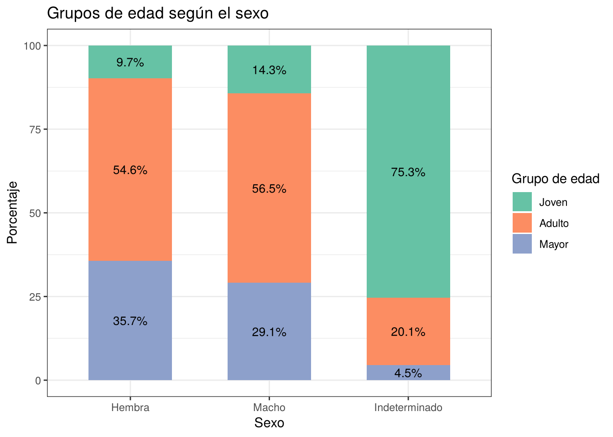
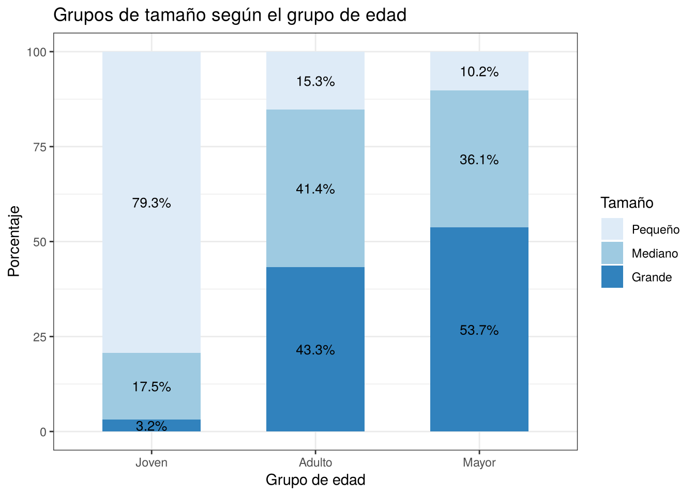

3 Tabla de contingencia
Las tablas de contingencia permiten estudiar la relación entre dos variables cualitativas a partir de sus frecuencias. En este capítulo se aplican las dos pruebas vistas en las notas de clase, ambas basadas en el estadístico \(\chi^2\):
- La prueba de homogeneidad, para comparar si la distribución de una variable categórica es la misma en varias poblaciones.
- La prueba de independencia, para evaluar si dos variables categóricas medidas en una misma población están asociadas.
En la base de cangrejos la única variable categórica es el sexo, así que primero es necesario construir otras variables categóricas a partir de las numéricas.
Carguemos los datos con la misma limpieza de los capítulos anteriores:
library(tidyverse)
df <- read.csv("datos/train.csv") %>%
select(-id) %>%
rename(
sexo = Sex,
largo = Length,
diametro = Diameter,
altura = Height,
peso = Weight,
peso_carne = Shucked.Weight,
peso_visceras = Viscera.Weight,
peso_caparazon = Shell.Weight,
edad = Age
) %>%
mutate(
altura = ifelse(altura == 0, NA, altura),
altura = ifelse(is.na(altura), mean(altura, na.rm = TRUE), altura),
sexo = factor(sexo,
levels = c("F", "M", "I"),
labels = c("Hembra", "Macho", "Indeterminado"))
)3.1 Creación de las variables categóricas
Grupo de edad. Para clasificar a los cangrejos según su edad usamos los cuartiles de la variable edad:
## 25% 75%
## 8 11Con estos valores se definen tres grupos: Joven para los cangrejos de hasta \(8\) meses (hasta el primer cuartil), Adulto para los que tienen entre \(9\) y \(11\) meses (entre el primer y el tercer cuartil) y Mayor para los de \(12\) meses o más (por encima del tercer cuartil).
Grupo de tamaño. Para el tamaño usamos el largo del cangrejo dividido en terciles, de forma que cada grupo tenga aproximadamente la tercera parte de los datos:
## 0% 33.33333% 66.66667% 100%
## 0.187500 1.250000 1.487500 2.012815Así, los cangrejos con largo hasta \(1{,}25\) pies son Pequeños, los que están entre \(1{,}25\) y \(1{,}4875\) pies son Medianos y los de más de \(1{,}4875\) pies son Grandes. Creemos las dos variables:
df <- df %>%
mutate(
grupo_edad = cut(edad,
breaks = c(-Inf, 8, 11, Inf),
labels = c("Joven", "Adulto", "Mayor")),
grupo_tamano = cut(largo,
breaks = quantile(largo, c(0, 1/3, 2/3, 1)),
include.lowest = TRUE,
labels = c("Pequeño", "Mediano", "Grande"))
)Veamos la frecuencia de cada grupo:
df %>%
count(grupo_edad, name = "Frecuencia") %>%
mutate(Porcentaje = round(Frecuencia / sum(Frecuencia) * 100, 2))## grupo_edad Frecuencia Porcentaje
## 1 Joven 24176 32.65
## 2 Adulto 32699 44.16
## 3 Mayor 17176 23.19df %>%
count(grupo_tamano, name = "Frecuencia") %>%
mutate(Porcentaje = round(Frecuencia / sum(Frecuencia) * 100, 2))## grupo_tamano Frecuencia Porcentaje
## 1 Pequeño 25914 34.99
## 2 Mediano 23987 32.39
## 3 Grande 24150 32.61El grupo Adulto es el más grande, con el \(44{,}16\%\) de los cangrejos, mientras que los Jóvenes son el \(32{,}65\%\) y los Mayores el \(23{,}19\%\). Los grupos no quedan exactamente en \(25\%\), \(50\%\) y \(25\%\) porque la edad solo toma valores enteros y hay muchos cangrejos con la misma edad justo en los puntos de corte. Por la misma razón, los grupos de tamaño tampoco tienen exactamente un tercio cada uno (\(34{,}99\%\), \(32{,}39\%\) y \(32{,}61\%\)), aunque están bastante balanceados.
3.2 Prueba de homogeneidad
Se quiere saber si la distribución de los grupos de edad es la misma en las hembras, los machos y los indeterminados. En este caso, cada sexo se considera una población distinta (\(I = 3\)) y el grupo de edad es la variable categórica común (\(J = 3\)). Si \(p_{ij}\) es la proporción de cangrejos de la población \(i\) que caen en el grupo de edad \(j\), las hipótesis son:
\[ H_0: p_{1j} = p_{2j} = p_{3j}, \quad \text{para cada } j = 1, 2, 3 \]
\[ H_1: \text{al menos una de las proporciones es diferente} \]
Bajo \(H_0\), el número esperado en cada celda es
\[ \hat{E}_{ij} = \frac{R_i C_j}{n}, \]
donde \(R_i\) y \(C_j\) son los totales de la fila \(i\) y la columna \(j\). Si todos los \(\hat{E}_{ij} \geq 5\), se rechaza \(H_0\) cuando
\[ \chi^2 = \sum_{i=1}^{I} \sum_{j=1}^{J} \frac{(O_{ij} - \hat{E}_{ij})^2}{\hat{E}_{ij}} > \chi^2_\alpha, \]
donde \(\chi^2_\alpha\) es el valor crítico de la distribución chi-cuadrado con \((I - 1)(J - 1)\) grados de libertad.
3.2.1 Solución paso a paso
Construyamos la tabla de contingencia con las frecuencias observadas:
## Edad
## Sexo Joven Adulto Mayor
## Hembra 2242 12562 8206
## Macho 3885 15314 7885
## Indeterminado 18049 4823 1085Calculemos los totales por fila, columna y el total general:
fila_totales <- rowSums(observados)
col_totales <- colSums(observados)
total_general <- sum(observados)
fila_totales## Hembra Macho Indeterminado
## 23010 27084 23957## Joven Adulto Mayor
## 24176 32699 17176## [1] 74051Ahora, hallemos las frecuencias esperadas bajo \(H_0\):
esperados <- outer(fila_totales, col_totales, FUN = function(f, c) f * c / total_general)
dimnames(esperados) <- dimnames(observados)
round(esperados, 2)## Edad
## Sexo Joven Adulto Mayor
## Hembra 7512.25 10160.62 5337.13
## Macho 8842.32 11959.59 6282.09
## Indeterminado 7821.43 10578.79 5556.78Verifiquemos que todas las frecuencias esperadas son mayores o iguales a \(5\):
## [1] TRUELa condición se cumple, pues la frecuencia esperada más pequeña es de \(5337{,}13\). Seguido calculemos el estadístico \(\chi^2\):
## [1] 30040.34Determinemos los grados de libertad:
## [1] 4Ahora, el valor crítico y la decisión al \(5\%\):
## [1] 9.487729## [1] TRUEConcluimos que
if (rechaza_H0) {
conclusion <- "Se rechaza H0: la distribución de los grupos de edad no es la misma en los tres sexos."
} else {
conclusion <- "No se rechaza H0: no hay evidencia suficiente para afirmar que la distribución de los grupos de edad cambia según el sexo."
}
conclusion## [1] "Se rechaza H0: la distribución de los grupos de edad no es la misma en los tres sexos."Si calculamos el p-valor
## [1] 0El p-valor es tan pequeño que R lo muestra como cero.
3.2.2 Prueba con la función chisq.test()
##
## Pearson's Chi-squared test
##
## data: observados
## X-squared = 30040, df = 4, p-value < 2.2e-16La prueba chi-cuadrado indica que, con una confianza del \(95\%\), la distribución de los grupos de edad no es homogénea entre hembras, machos e indeterminados (\(\chi^2_{(4)} = 30040,\ p\text{-valor} < 0{,}001\)). El resultado coincide con el cálculo manual.
Para ver en qué consiste la diferencia, revisemos las proporciones de cada grupo de edad dentro de cada sexo:
## Edad
## Sexo Joven Adulto Mayor
## Hembra 9.74 54.59 35.66
## Macho 14.34 56.54 29.11
## Indeterminado 75.34 20.13 4.53as.data.frame(observados) %>%
group_by(Sexo) %>%
mutate(Porcentaje = Freq / sum(Freq) * 100) %>%
ggplot(aes(x = Sexo, y = Porcentaje, fill = Edad)) +
geom_col(width = 0.6) +
geom_text(aes(label = paste0(round(Porcentaje, 1), "%")),
position = position_stack(vjust = 0.5), size = 3.5) +
scale_fill_brewer(palette = "Set2") +
labs(
title = "Grupos de edad según el sexo",
x = "Sexo",
y = "Porcentaje",
fill = "Grupo de edad"
) +
theme_bw()
Figura 3.1: Distribución de los grupos de edad según el sexo
Las hembras y los machos tienen una distribución parecida: en ambos predominan los adultos (\(54{,}59\%\) y \(56{,}54\%\)), seguidos por los mayores (\(35{,}66\%\) y \(29{,}11\%\)), y los jóvenes son pocos (\(9{,}74\%\) y \(14{,}34\%\)). En cambio, en los indeterminados el \(75{,}34\%\) son jóvenes y solo el \(4{,}53\%\) son mayores. Esta es la principal fuente de la falta de homogeneidad.
Los residuales de la prueba, que se calculan como \(\dfrac{O_{ij} - \hat{E}_{ij}}{\sqrt{\hat{E}_{ij}}}\), muestran qué celdas aportan más al estadístico \(\chi^2\):
## Edad
## Sexo Joven Adulto Mayor
## Hembra -60.81 23.82 39.27
## Macho -52.72 30.67 20.22
## Indeterminado 115.65 -55.96 -59.99El residual más grande es el de los indeterminados jóvenes (\(115{,}65\)), lo que quiere decir que hay muchos más cangrejos en esa celda de los que se esperarían si la distribución fuera la misma en los tres sexos. Por el contrario, las hembras y los machos jóvenes tienen residuales negativos, es decir, hay menos de los esperados. Este resultado es consistente con lo encontrado en el capítulo 2, donde los indeterminados resultaron ser el grupo más joven.
3.3 Prueba de independencia
Ahora se quiere saber si el grupo de edad de un cangrejo está asociado con su tamaño. En este caso se tiene una sola población (todos los cangrejos de la base) y cada uno se clasifica según dos atributos: el grupo de edad (\(A\), con \(I = 3\) categorías) y el grupo de tamaño (\(B\), con \(J = 3\) categorías). Las hipótesis son:
\[ H_0: p_{ij} = p_{i\cdot} \, p_{\cdot j} \quad \text{para todo } i, j \quad \text{(el grupo de edad y el tamaño son independientes)} \]
\[ H_1: \text{el grupo de edad y el tamaño no son independientes} \]
Bajo \(H_0\), el número esperado de observaciones en cada celda es
\[ \hat{E}_{ij} = n \, \hat{p}_{i\cdot} \, \hat{p}_{\cdot j} = n \cdot \frac{R_i}{n} \cdot \frac{C_j}{n} = \frac{R_i C_j}{n}. \]
Si todos los \(\hat{E}_{ij} \geq 5\), se rechaza \(H_0\) al nivel \(\alpha\) cuando \(\chi^2 > \chi^2_\alpha\), con \((I-1)(J-1)\) grados de libertad.
3.3.1 Solución paso a paso
Construyamos la tabla de contingencia:
## Tamano
## Edad Pequeño Mediano Grande
## Joven 19166 4239 771
## Adulto 4996 13548 14155
## Mayor 1752 6200 9224Hallemos los totales y los valores esperados:
fila_totales2 <- rowSums(observados2)
col_totales2 <- colSums(observados2)
n <- sum(observados2)
esperados2 <- outer(fila_totales2, col_totales2) / n
round(esperados2, 2)## Pequeño Mediano Grande
## Joven 8460.34 7831.22 7884.44
## Adulto 11442.95 10592.04 10664.01
## Mayor 6010.71 5563.74 5601.55## [1] TRUETodas las frecuencias esperadas son mayores a \(5\) (la menor es \(5563{,}74\)). Calculemos el estadístico chi-cuadrado y los grados de libertad:
## [1] 32645.15## [1] 4Ahora, el valor crítico y la decisión al \(5\%\):
## [1] 9.487729## [1] TRUESi calculamos el p-valor
## [1] 03.3.2 Prueba con la función chisq.test()
##
## Pearson's Chi-squared test
##
## data: observados2
## X-squared = 32645, df = 4, p-value < 2.2e-16La prueba chi-cuadrado nos indica que el grupo de edad y el grupo de tamaño no son independientes (\(\chi^2_{(4)} = 32645,\ p\text{-valor} < 0{,}001\)). Es decir, el tamaño de un cangrejo está asociado con su grupo de edad.
Veamos las proporciones de cada tamaño dentro de cada grupo de edad:
## Tamano
## Edad Pequeño Mediano Grande
## Joven 79.28 17.53 3.19
## Adulto 15.28 41.43 43.29
## Mayor 10.20 36.10 53.70as.data.frame(observados2) %>%
group_by(Edad) %>%
mutate(Porcentaje = Freq / sum(Freq) * 100) %>%
ggplot(aes(x = Edad, y = Porcentaje, fill = Tamano)) +
geom_col(width = 0.6) +
geom_text(aes(label = paste0(round(Porcentaje, 1), "%")),
position = position_stack(vjust = 0.5), size = 3.5) +
scale_fill_brewer(palette = "Blues") +
labs(
title = "Grupos de tamaño según el grupo de edad",
x = "Grupo de edad",
y = "Porcentaje",
fill = "Tamaño"
) +
theme_bw()
Figura 3.2: Distribución del tamaño según el grupo de edad
## Tamano
## Edad Pequeño Mediano Grande
## Joven 116.39 -40.59 -80.11
## Adulto -60.27 28.72 33.81
## Mayor -54.93 8.53 48.40La asociación es clara: el \(79{,}28\%\) de los cangrejos jóvenes son pequeños y apenas el \(3{,}19\%\) son grandes. En los adultos los tamaños mediano y grande se reparten casi por igual (\(41{,}43\%\) y \(43{,}29\%\)), y en los mayores predominan los grandes (\(53{,}70\%\)). Los residuales confirman este patrón, con valores positivos muy altos en las celdas Joven-Pequeño (\(116{,}39\)) y Mayor-Grande (\(48{,}40\)), y negativos en Joven-Grande (\(-80{,}11\)) y Mayor-Pequeño (\(-54{,}93\)).
Sin embargo, también se observa que entre los mayores hay un \(10{,}20\%\) de cangrejos pequeños y un \(36{,}10\%\) de medianos, lo que muestra que el tamaño por sí solo no determina la edad. Esto coincide con lo visto en los diagramas de dispersión del capítulo 1, donde cangrejos del mismo largo podían tener edades muy distintas.